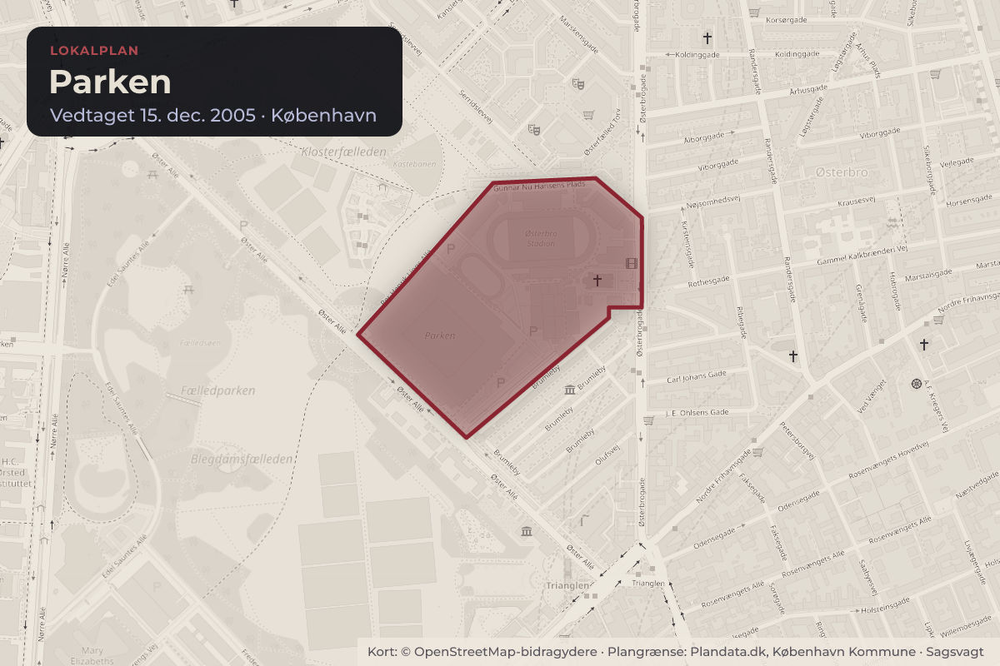
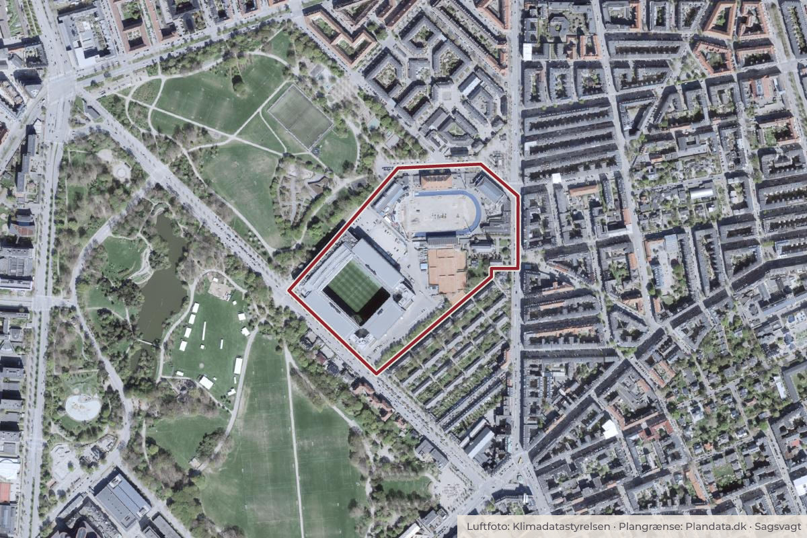

Besluttet 15. juni, Klima-, Miljø- og Teknikudvalget
Dispensation fra lokalplan til etablering af restaurant i Parken, Østerbro
Klima og grøntByggeri og lokalplaner

Kort: © OpenStreetMap-bidragydere. Plangrænse: Plandata.dk, København Kommune.

Kort fortalt
- Forslaget
- Forvaltningen giver dispensation til etablering af restaurant med tidsbegrænset åbningstid fra kl. 07.00-01.00 søndag til torsdag og kl. 07.00-02.00 fredag og lørdag, samt udeservering til kl. 23.00 i Parken, Øster Allé 40.
- Forvaltningen giver dispensation til den ansøgte skiltning på facaden
- Hvem
- Klima-, Miljø- og Teknikudvalget
- Hvornår
- Mandag 15. juni 2026
- Status
- Besluttet. Jf.Beslutningen er forkortet her. Læs hele beslutningen
- Næste skridt
- Når Klima-, Miljø- og Teknikudvalget har godkendt indstillingen, vil forvaltningen færdigbehandle sagen og træffe afgørelse i overensstemmelse med udvalgets beslutning.
Er noget forkert her? Skriv til os
Forkastet 5–5
- For 5
- Imod 5
- Undlod 0
For
Imod
Afstemninger om ændringsforslag
For
Imod
Sagens vej
- 15. juniKlima-, Miljø- og TeknikudvalgetBesluttet
- 25. juniBorgerrepræsentationenGodkendt
Læs hele sagen Kommunens egen tekst
Indstilling
Klima-, Miljø- og Teknikforvaltningen indstiller, at Klima-, Miljø- og Teknikudvalget godkender,
• at forvaltningen giver dispensation til etablering af restaurant med tidsbegrænset åbningstid fra kl. 07.00-01.00 søndag til torsdag og kl. 07.00-02.00 fredag og lørdag, samt udeservering til kl. 23.00 i Parken, Øster Allé 40.
• at forvaltningen giver dispensation til den ansøgte skiltning på facaden
Problemstilling
Forvaltningen har den 11. september 2025 modtaget en ansøgning om tilladelse til at indrette en McDonalds restaurant i Parken på Øster Allé 40, herunder tre facadeskilte og to stk. logo (”M”). Parken er omfattet af lokalplan ”Parken” (lokalplan nr. 401) med tillæg nr. 1 bekendtgjort hhv. 11. januar 2006 og 25. juni 2008. Lokalplanen fastlægger områdets anvendelse til fritidsformål, såsom idrætsanlæg med tilhørende administration og publikumsfaciliteter. Lokalplanen muliggør desuden afholdelse af forskellige arrangementer. Etablering af restaurant er ikke umiddelbart tilladt, men lokalplanen giver mulighed for, at der kan dispenseres til, at der som en integreret del af stadionanlægget kan indrettes serviceerhverv i form af kontorer og lignende samt til hotel, konferencefaciliteter, restauranter og lignende. Derudover kræver den ansøgte skiltning på facaden også dispensation fra lokalplanen.
I Kommuneplan 2024 ligger Parken i et O3-område med mulighed for serviceerhverv. Parken ligger ikke indenfor bymidten omkring Østerbrogade.
Sagen forelægges Klima-, Miljø- og Teknikudvalget, fordi forvaltningen har modtaget mange negative høringssvar i naboorienteringerne om dispensationerne, jf. Retningslinjer for meddelelse af dispensation fra en lokalplan (BR 21. september 2017), hvorefter sager forelægges til politisk behandling hvis naboorienteringen medfører mange og/eller vægtige indsigelser.
Løsning
Forvaltningen foreslår, at der dispenseres til at indrette restaurant i Parken og at dispensationen betinges af at restaurantens åbningstid begrænses til kl. 07.00-01.00 søndag til torsdag og kl. 07.00-02.00 fredag og lørdag, samt udeservering til kl. 23.00 alle dage, som ansøgt. Forvaltningen vurderer, at der med den begrænsede åbningstid ikke vil være væsentlige gener for de omkringboende, som ligger ud over det, der er sædvanligt i et brokvarter. Der ligger desuden andre restauranter i Parken.
Forvaltningen foreslår, at der dispenseres til den ansøgte skiltning, se illustrationer i bilag 2. Skiltningen er i overensstemmelse med kommunens Skilteretningslinjer (TMU 17. juni 2024). Se oversigt over dispensationer i bilag 3.
Høring
Sagen er sendt i naboorientering af to omgange, fordi ansøger reviderede projektet på baggrund af første naboorientering. Bl.a. ændrede ansøger facaden så den ikke længere kræver dispensation fra lokalplanen og reducerede åbningstiden, så der ikke længere søges om døgnåbent. Første gang sagen var i naboorientering var fra den 16. februar til den 2. marts 2026. Forvaltningen har modtaget 89 høringssvar og indsigelser fra naboer og borgere jf. bilag 4. Østerbro Lokaludvalg afgav høringssvar den 26. marts 2026. Ansøgers bemærkninger til høringssvar på første naboorientering fremgår af bilag 6.
Anden gang sagen var i naboorientering var fra den 17. april til den 8. maj 2026. Forvaltningen har i denne periode modtaget 85 høringssvar og indsigelser fra naboer og borgere jf. bilag 5. Østerbro Lokaludvalg afgav høringssvar den 8.maj 2026. Ansøgers bemærkninger til høringssvar på anden naboorientering fremgår af bilag 7.
Der er ikke fuldstændigt sammenfald mellem høringssvar og indsigelser i første og anden naboorientering både hvad angår borgere og emner, der gøres indsigelse imod. Nedenfor er der derfor redegjort for de samlede indsigelser.
Høringssvar fra lokaludvalg
Østerbro Lokaludvalg støtter borgernes overvejende negative synspunkter ift. eventuel etablering af en McDonalds på Øster Allé 40. I anden naboorientering anfører lokaludvalget, at de ser positivt på, at det reviderede forslag forsøger at imødekomme dele af kritikpunkterne fra beboerne i området. Lokaludvalget bakker forsat op om beboernes bekymringer og mener, at projektet skal holde sig inden for lokalplanens rammer.
Høringssvar
Hovedparten af de samlede indsigelser og høringssvar i begge naboorienteringer kommer fra beboere i området, primært det almennyttige boligbyggeri Brumleby, beboere på modsatte side af Øster Allé og fra beboere på Olufsvej. Svarene er overvejende negative og handler om støjgener (154 svar), lugtgener (66 svar), affald (143 svar), kundernes adfærd (63 svar), skiltning (46 svar), lysgener fra skilt (65 svar), trafik og parkering (157 svar) samt ejerforhold og koncept (36 svar). Derudover fremgår det af en stor del af svarene, at mange naboer allerede oplever gener i forbindelse med fodboldkampe og andre arrangementer i Parken. Mange er bekymrede for, at en fastfoodrestaurant vil forøge de nuværende gener.
Ansøger har på baggrund af de mange høringssvar fra naboerne redegjort for, at de opstiller skraldespande og sørger for regelmæssig rengøring. Forvaltningen har ikke mulighed for at håndhæve privates renholdelse på offentlige vejarealer.
Forvaltningens bemærkninger
Forvaltningen har mulighed for at regulere nogle af de forhold, som fremgår af høringssvarene og indsigelserne (herunder nogle former for støj på dele af Parkens matrikel, lugtgener fra ventilationsanlæg, affaldshåndtering ved restauranten, skiltning, lysgener og parkering). Ansøger oplyser, at der etableres nyt ventilationsanlæg med støjdæmpende foranstaltninger, så det sikres at miljøstyrelsens grænseværdier overholdes. Derudover anvendes teknologi til at nedbryde fedtpartikler, lugtstoffer og organiske forbindelser i afkastluften. Forvaltningen har ikke mulighed for at regulere støj fra aktiviteter på offentlig vej eller kundernes adfærd, og kan ikke afvise, at en fastfoodrestaurant vil medføre gener for de omkringboende. På den baggrund anbefaler forvaltningen, at restaurantens åbningstid begrænses, men derudover reguleres øvrige forhold ikke ifm. dispensationen. Forvaltningens uddybende bemærkninger til høringssvar fremgår af bilag 8.
Politisk handlerum
Udvalget kan beslutte,
• at give dispensation til restaurant uden betingelser om åbningstid.
• at give dispensation til restaurant med betingelse om kortere åbningstid end den ansøgte, f.eks. kl. 07.00-23.00 alle dage.
• at give dispensation til restaurant med betingelse om, at der ikke etableres udeservering.
• at give dispensation til restaurant, men ikke til skiltning.
• at give afslag på dispensation til restaurant. Et afslag på dispensationer vil medføre, at forvaltningen giver afslag på byggetilladelse til det ansøgte projekt.
Dette vil også være udfaldet, hvis indstillingen ikke godkendes.
Økonomi
Denne indstilling har ikke i sig selv økonomiske konsekvenser for Københavns Kommune.
Videre proces
Når Klima-, Miljø- og Teknikudvalget har godkendt indstillingen, vil forvaltningen færdigbehandle sagen og træffe afgørelse i overensstemmelse med udvalgets beslutning.
Beslutning
Socialistisk Folkeparti og Enhedslisten stillede følgende ændringsforslag som erstatning af 1. at-punkt:
”at forvaltningen giver dispensation til etablering af restaurant med tidsbegrænset åbningstid fra kl. 07.00-23.00 alle ugens dage, herunder udeservering til kl. 23.00 i Parken, Øster Allé 40.”
Ændringsforslaget bortfaldt med 5 stemmer mod 5. Ingen undlod at stemme.
For stemte: F, Ø og Å
Imod stemte: A, B, C og I
Indstillingen bortfaldt med 5 stemmer mod 5. Ingen undlod at stemme.
For stemte: A, B, C og I
Imod stemte: F, Ø og Å
Indstillingen blev standset af Morten Melchiors (C), jf. kommunestyrelseslovens § 23, og indstillingen indbringes dermed i sin helhed til afgørelse i Borgerrepræsentationen.
Bilag
- Bilag 1 Overblik over politisk behandling
- Bilag 2 Illustrationer
- Bilag 3 Dispensationsoversigt
- Bilag 4 Høringssvar - naboorientering 1
- Bilag 5 Høringssvar - naboorientering 2
- Bilag 6 Ansøgers svar på høring 1
- Bilag 7 Ansøgers svar på høring 2
- Bilag 8 Forvaltningens bemærkninger til høringssvar
Kilde: Københavns Kommune, Klima-, Miljø- og Teknikudvalget, referat fra mødet mandag 15. juni 2026, punkt 11. Læs den originale sag hos kommunen.